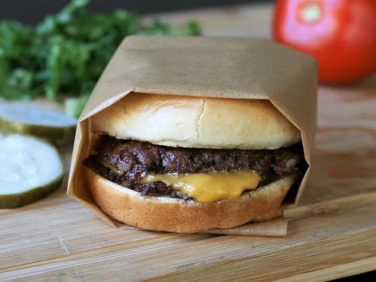

Burger

Description
A juicy burger with crispy edges. Its completly easy to create with just the
use of buns and grilled up steak. It also has cheese include with whatever
toppings you wish to add yourself.
ingredients
- 4 hamburger buns
- 2 tablespoons butter, softened, or as needed
- 1 pound ground chuck beef (80% lean)
- 4 6-inch squares parchment paper
- salt to taste
- 4 slices American cheese
- burger toppings of choice
Steps
- Preheat an outdoor grill for high heat and lightly oil the grate.
Set a cast iron flat-top griddle or large cast iron skillet onto
the grill and preheat until smoking.
- Spread butter on the inside of the bunns and toast on the
flat-top until lightly browned. Set aside.
- Form meat into 8 loosely-packed balls, 2 ounces each. Do not pack
the meat tightly, as this will prevent it from smashing properly.
Place each ball on the hot flat-top, cover with a piece of parchemnt
(to prevent sticking to spatula) and immediately smash down to
a 1/4 inch thickness using 2 stiff, sturdy spatulas that are
criss-crossed to get proper leverage as you press down. You may also use the bottom
of small skillet. Sprinkle the meat with salt.
- Grill for about 45 seconds, until the edges are dark brown and the centers are
a light pink color. Using a bench scraper or girm spatula, gently scrape up the patties,
flip over and immediately cover 4 of them with cheese. Grill an additional 15
to 20 seconds; stack the plain patties over the cheese-covered patties so you
have 4 stacks. Move each stack to a bun and serve with your favorite toppings.
Return to main page